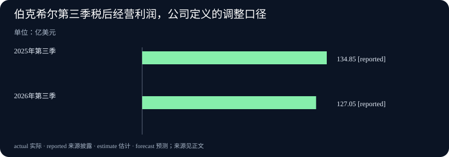

Daily Intelligence · 2026-11-08
信息边界：新闻研究截止于北京时间 2026 年 11 月 8 日 07:00:53，优先窗口从 11 月 7 日 07:00:53 开始。Xinference 与 llama.cpp 的实际 release 时间分别为北京时间 11 月 7 日 21:07:47、20:15:59，均在窗口内。两项商业资料标注 11 月 7 日，实际首次公开小时未独立证实；伯克希尔提前公告的约 07:00 美国中部时间属于排期，不能冒充实际发布时间。统计与财报所属期间分别为 10 月末和第三季度。
Today's Thesis
人工智能（AI）服务的改进，有时表现为少做重复计算，有时表现为把一个计算步骤做对。经营资料也需要分清变化来自哪里：资产计价会改变总数，业务表现则要看具体构成。今天的共同问题是，怎样从一个变化的数字，找到真正发生变化的环节。
Executive Summary
Xinference 发布 4.2.0，增加模型服务的缓存复用、逐个副本重新加载与网页性能测试。它管理的是模型怎样运行、怎样接待请求，不能据此推断同一个模型学到了新知识。
llama.cpp 的 b12189 预发布版修复 Apple Metal 路径上的一项分组归一化计算。特定批量输入曾有部分结果没有写出。这是明确的正确性修复，适用范围和外部复测仍需保留。
中国 10 月末外汇储备为 34,052 亿美元，较 9 月末增加 49 亿美元。伯克希尔第三季度归母净利润约 221.12 亿美元，公司定义的经营利润约 127.05 亿美元，均低于去年同期。两个总数都需要追问：汇率和价格怎样影响计价，具体业务又怎样变化。
AI Daily
1. Xinference 4.2.0 减少重复工作，也增加可比较的测试入口
Xinference 是帮助团队部署模型、分配请求和管理运行资源的软件。11 月 7 日发布的 4.2.0 增加跨副本的前缀缓存共享。前缀缓存指保留已经处理过的共同输入及相关计算结果，让兼容的后续请求复用。多个副本可以理解为同时接待请求的多份模型服务。发布说明还提到，在代理等待工具返回时，可以优先保留这部分记录，减少恢复任务后的重复计算。正式发布说明
版本同时为受支持的 vLLM、SGLang 运行环境提供逐个副本重新加载的安排。运行环境是实际执行模型计算的软件。符合条件时可以保留显卡中的模型权重，让旧实例先完成正在处理的请求，再逐个更新。权重是训练形成、运行模型时使用的数字。这种安排有助于规划服务更新，但不等于任何配置都能保证完全不停机。对应功能说明
管理员也可以从网页发起不同同时请求数量的测试，比较每秒处理量、多久开始返回第一个结果，以及之后的输出速度。这次新增的是服务管理、复用和测量能力。采用前应固定模型、任务和设备，分别记录回答正确率与等待时间；缓存命中、服务更新和任务质量各有自己的检查办法。
2. llama.cpp 修复特定计算错误，预发布状态仍须明示
llama.cpp 是让模型在本地等环境中运行的开源软件。11 月 7 日的 b12189 预发布版修复 Metal 后端中的 GROUP_NORM。Metal 是使用 Apple 设备图形处理器进行计算的技术；分组归一化则是把一组数字按该组统计值调整的计算步骤。原实现忽略了输入的一个批量维度，在该维度大于一的特定情况下，第一批之后的部分输出没有写出。原始预发布记录
修复按批次分别计算，并处理某些数字在内存中并非连续排列的输入。发布说明还限制该操作接受的数据格式，避免把一种精度的数据错按另一种读取。改动的目标是让该路径的结果与中央处理器参考实现一致。它没有声称所有模型回答都更准确，也没有给出可以推广到全部任务的加速幅度。
这里应关注一个具体问题：自己的模型和运行路径是否使用了受影响操作。没有使用这一组合的任务，不能直接套用修复效果。使用者可以保存原有输入与版本，在隔离测试环境里比较输出，再决定采用哪个版本。大量自动构建本身并不是多条新闻，本期只纳入这个有明确错误条件和修复内容的预发布变化。
Business Daily
1. 中国 10 月末外汇储备小幅增加，计价变化需与资金流分开
国家外汇管理局 11 月 7 日公布，10 月末外汇储备约 3.4052 万亿美元，即 34,052 亿美元，较 9 月末增加 49 亿美元，升幅 0.14%。原文指出，当月美元指数上涨、主要金融资产价格表现不一，汇率折算和资产价格变化等因素共同影响了储备规模。外汇局原始发布
外汇储备以美元金额报告。即使不发生同等金额的买卖，所持非美元资产换算成美元后的价值，以及所持金融资产的市场价格，都可能变化。因此，增加 49 亿美元不能直接解释为流入了 49 亿美元新资金，也不能据此推算某一项外汇市场操作。
本次新事实是 10 月末存量及其月度变化。它可以帮助观察储备规模，但要判断企业收付款、跨境投资或贸易情况，还需对应的独立统计。一个总数的变化不能替代所有资金渠道的记录。
2. 伯克希尔第三季利润下降，投资计价与业务构成要分开看
伯克希尔 11 月 7 日披露第三季度结果。归属于股东的净利润为 221.12 亿美元，去年同期为 307.96 亿美元。公司将投资收益等项目单列后，按自身定义计算的经营利润为 127.05 亿美元，去年为 134.85 亿美元，下降约 5.8%。这是一项经调整的公司指标，排除投资损益及指定减值，与会计净利润不同。公司正式季报新闻稿，第 1 页
业务内部也有差别。保险承保税后利润从 23.69 亿降至 13.52 亿美元；承保结果反映收取保费和承担理赔等保险业务的结果。BNSF 铁路税后利润则从 14.49 亿升至 17.29 亿美元。全部经营利润下降，不意味着每项业务同步转弱。分项表，第 2 页
公司还披露，第三季度回购约 96 亿美元自身股票。回购是公司使用资金买回自己的股份，与经营赚得多少利润是两件事。对这次业绩的进一步判断，需要结合完整报表与后续经营资料，不能仅用股价变动或回购金额替代业务分析。
Macro Observation
外汇储备与企业利润不是同一种统计，也不能相加。不过，它们都提示了价格计量的重要性。外汇储备用美元汇总资产，企业净利润也可能包含未出售投资的价值变化。看到总金额变动之后，先区分交易、计价和日常经营，会减少过度推断。
昨日的北美就业资料强调调查对象和版本，本期增加的是资产与利润口径的区别。对普通读者，可把这两组问题接起来：先问统计了什么、属于哪段期间，再问变化来自数量、价格，还是构成。答案会影响后续该查哪份资料，而不是自动给出市场方向。
Signal Dashboard
| 主线 | 本次新增事实 | 仍应追踪的边界 |
|---|---|---|
| 模型服务管理 | Xinference 新增缓存复用、逐个副本重载和测试入口 | 支持的环境、命中条件与真实等待时间 |
| 本地计算正确性 | llama.cpp 修复特定批量与内存排列下的计算问题 | 预发布、受影响操作与自身任务复测 |
| 中国储备 | 10 月末增加 49 亿美元，规模 34,052 亿美元 | 计价变化与实际资金交易不能混同 |
| 伯克希尔业绩 | 经营利润低于同期，保险与铁路表现不同 | 公司调整口径、分项结果与资金安排 |
Deep Insight
改善是否成立，取决于比较时保留了什么
比较一项改进时，我们常把注意力放在变化最大的数字上。但要判断它代表什么，必须知道哪些条件保持相同，哪些条件已经改变。今天的软件更新和经营资料，可以帮助读者把这个问题具体化。它们之间没有直接因果联系，适用的是同一种核对顺序。
缓存的价值来自复用已经做过的工作。假设几个请求共享一段长输入，服务保留合适的计算记录，后续请求便有机会减少重复处理。若每个请求的输入都不同，或者记录已被清理，效果就可能不同。这个例子解释适用条件，并没有估计 Xinference 为某家公司节省多少费用。测试时既要看复用成功的请求，也要看无法复用的请求，才知道日常负载中的实际改善。
服务更新还涉及时间分配。一个系统可能已有多个副本，如果每次只重新加载一个，其他副本仍能处理任务，更新期间的容量就与同时停止所有副本不同。但任务是否排队、旧请求能否完成、配置是否支持保留权重，都需要实际记录。一个功能被加入软件，表明管理员获得了新选择；是否达成预期的服务表现，还取决于部署方式和操作过程。
正确性修复则先问另一件事：旧结果是否按规则算出。对于本期 llama.cpp 的指定操作，部分输出未写出属于具体错误。若只做速度测试，程序更快结束也不能证明结果完整。复测应保留输入、运行后端和版本，再检查修复后是否与可信的参考结果一致。这里不能用笼统的“模型更强”替代对计算步骤的验证，也不能把受影响路径扩大到所有模型任务。
经营数字中的可比条件同样重要。伯克希尔同时给出净利润和公司定义的经营利润，是为了让读者看见不同口径下的变化。选择其中一个数字之后，比较的另一端也应使用同一口径。若把今年经营利润与去年净利润放在一起，计算出的降幅便没有一致含义。进一步看分项，才能判断总数由哪些业务推动；单项改善与整体下降可以同时发生。
外汇储备还提醒我们，币种和时点也是条件。假设持有数量不变的某项非美元资产发生汇率变化，换算成美元的金额仍可能改变。这个假设不描述外汇局的具体持仓，只说明计价机制。读者若想从储备总量追到资金流，需要另找交易资料，不能把两次存量相减就当成已知流入。
可行的记录方式是，每次比较都附上对象、单位、期间、版本和限制。软件性能附任务与设备，计算修复附输入和参考结果，财报附会计口径，储备附计价币种。以后出现新证据时，便能知道该修改哪一项判断。这让分析不依赖一个醒目的数字，也保留了推翻原结论的路径。
Tomorrow Watch
后续观察 Xinference 在不同请求组合下的缓存复用与更新过程，以及 llama.cpp 预发布修复是否得到更多可重复验证。测试结果应说明配置和任务，不能用版本发布次数代替改进幅度。
经营部分关注储备之外的独立收付款统计，以及伯克希尔各业务后续披露。11 月 9 日进入新一周后，再结合届时公开的资料更新判断；今天仍未公布的结果只列为观察对象，不提前写成事实。
One Chart
伯克希尔第三季度经营利润，同一公司口径比较

两根柱子分别为 2025 年第三季度 134.85 亿美元和 2026 年第三季度 127.05 亿美元，后者减少 7.80 亿美元，约下降 5.8%。两者均为公司定义的税后经营利润，属于非会计准则的调整口径。reported 表示“来源披露的数字”。这不是营业收入、现金流或归母净利润，也不把季度数字写成全年结果。公司对照表与指标定义
Quote of the Day
原文节录：He says the best way out is always through.
中文译文：他说，最好的出路总是穿过去。
人物：Robert Frost（罗伯特·弗罗斯特）
出处为诗集《波士顿以北》（North of Boston）中的《仆人的仆人》（A Servant to Servants），诗集出版于 1914 年。诗中叙述者因反复家务而疲惫，转述丈夫 Len 的话，紧接着只作有限认同，说自己看不见别的出路。这不是作者脱离情境写下的无条件励志格言。诗集原文，目标诗篇 · 美国诗人学会的出版年份说明
编辑解读：一句关于坚持的话，也可能包含说话者的无奈。读到简短名句时，保留人物处境，有助于理解它没有说出的限制。
Action Items
- 缓存改善适用于哪些请求？ 用相同模型和设备比较可复用与不可复用输入，同时记录正确率、等待和费用。
- 计算修复影响自己的路径吗？ 先确认操作、后端与版本，再用保留的输入对照参考结果，注意预发布状态。
- 储备增加等于资金流入吗？ 将计价与交易分开，若要判断资金活动，另查对应的独立统计。
- 利润比较用了相同口径吗？ 先区分净利润、调整后的经营利润与现金流，再检查业务分项和所属期间。
- 下次需要保留哪些条件？ 给选定指标补上单位、版本、时点和适用范围，让后续变化可以真正比较。